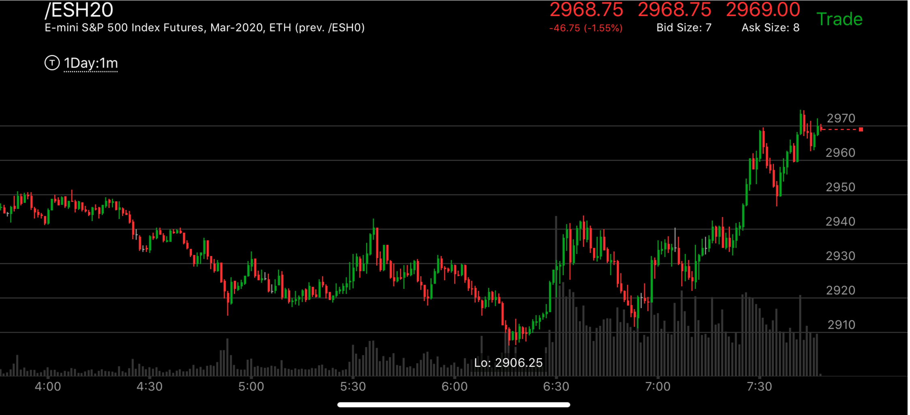
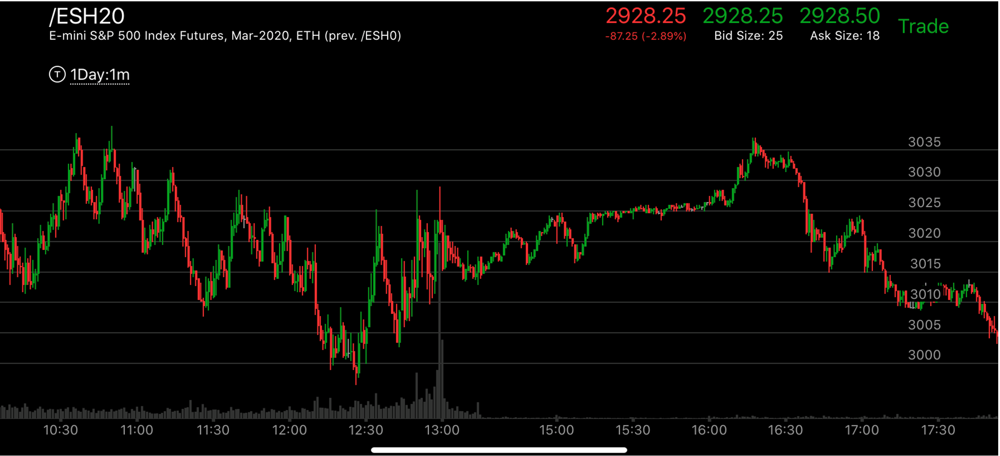

大幅拉回的走势启动方式
这个走势，第一浪幅度很大，然后大幅拉回，几乎拉回原点，然后再次上冲，不到第一浪极点，再次拉回，缓慢超过第一浪极点后，要么快速上冲，
要么走出两段走势。

图示：10：40它开始反转，第一浪拉回很多，然后出现了一个两段走势，这个反转就结束了。

图示：这个在高处立刻拉回，但是拉回的时候，出现了两段走势，或者完成走势。这样，再次上去的时候，
就不是一个完美形状，而且上去的速度很慢，所以会大大超过高点才对。而这个只是缓慢超过，这样不会反转，只会继续上涨。

图示：半夜1：00它冲高后，立刻拉回，但是它的拉回第一浪很大，第二浪很小。
不能是一个两段走势，3：00冲高后，它再次拉回，也没有出现下跌的两段走势，反而在5：00出现了新高，形成了下跌相对弱势。
这样就反转了。

图示：6:15分，它出现了相对弱势，和4：40相比。这样开始反转了。第一浪很大，到了2940，
然后大幅拉回，几乎拉回原位，然后再次上涨，可以看到，它在7：00的高点，不到2940，就拉回了。说明不是相对强势，会继续上涨，这样时间上，
也变长了，7：20它突破前面高点，大涨。成了第二浪。然后出现了相对弱势。开始反转而下跌浪。

图示：12：30出现相对11：30的相对弱势。开始上涨。它的第一浪幅度很大，但是几乎全部拉回再次上涨的时候，
虽然超过第一浪，但是幅度和速度都比较小。然后在15：30走平后，16：00出现了一个两段上涨走势，上涨结束了。开始下跌。它一定会跌破走势的开始点3000.